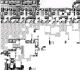

The Hooked Dragonite
This article lacks images.
| |
|  | Emulator screenshots are preferred to pictures taken with a camera of a capture card; however, a medium-quality image is better than no image. Any contributions are highly appreciated! |
The Hooked Dragonite is a notable glitch encounter in Pokémon Red and Blue, caused by a path buffer overflow that happens when the player talks to the Pewter Museum guide NPC from an unexpected coordinate. It was discovered by Paco81 in 2009, and analyzed by TheZZAZZGlitch in 2019.
Contents
Procedure
- Perform the Safari Zone exit glitch, and run out of Safari Zone steps while being guided by the Pewter Museum NPC.
- After leaving the Safari Zone entrance, the player will be in Pewter City, and the dialog that normally appears after being guided by the Pewter Museum NPC ("It's right here! You have to pay to get in, but it's worth it! See you around!") will appear.
- Save the game immediately (i.e. before the NPC's walking script finishes) and reset.
- After reloading the game, the Pewter Museum NPC will be walking downwards "through the Pokémon Center door", looping around the map.
- Talk to the NPC from the left when he is on the tile in front of the Pokémon Center door.
- The A button needs to be pressed when the NPC is exactly on that tile, so the player may need to mash the A button to make it happen.
- Ask him to guide the player (i.e. say "no" when he asks whether the player has checked out the Museum).
- The player and the NPC will stand in place for some time, as the "follow me" music slowly fades out. After a while, the "It's right here!" dialog will appear, but the B button won't work.
- Clear the text with A button. A battle with a "hooked Dragonite" will start.
- Unfortunately, the player cannot actually do the battle, because none of the joypad buttons do anything (except for soft resetting).
Talking to the NPC from other coordinates will result in different glitch effects, but none of them results in a glitch encounter in normal circumstances.
| |
Explanation
The above procedure works similar to the Safari Zone method of the Pewter Gym skip glitch followed by Brock Through Walls:
- Running out of Safari Zone steps while being guided breaks the meta-map script of Pewter City, causing a series of race conditions.
- Talking to the Pewter Museum guide NPC from an unexpected coordinate causes the game to look for a nonexistent entry in a lookup table.
Talking the NPC from this particular coordinate gives a consistent effect because this particular glitch path comes from the ROM. It is also unusually long (898 bytes, not including the 0xFF terminator), corrupting $D059 (wCurOpponent) and $D05F (hooked Pokémon), which is what causes the encounter with the "hooked Dragonite". The player cannot actually do the battle because the battle happens after the "It's right here!" text box is cleared, but before the NPC walks out of the screen, so the joypad is completely disabled by the script.
See the below sections for a more detailed explanation.
Script break
When the player runs out of Safari Zone step while being guided, the meta-map script ID of Pewter City remains 1, which is a script that is supposed to wait for the player to finish being guided, then display the "It's right here!" dialog, and then make the NPC walk downwards out of the screen. It does this by (indirectly[1]) checking whether the player is still in a scripted movement. Coincidentally, when the player is returned to the Safari Zone gate, the game makes the player walk down three steps, which overwrites the scripted movement from the museum guide. Therefore, when the player warps back to Pewter City, the game thinks the player has finished being guided and begins the next part of the script.
At this point, there are two effects that simultaneously wants to disable the player's controls. On one hand, the script wants to disable them while it is making the NPC walk down. On the other hand, since the player is warped onto a door (the Pewter Mart door), the game will try to make the player "step out of the door" by walking down one step, which also requires disabling the player's controls. Both happens, but the scripted movement of the player ends first, which re-enables the controls. (Actually, the player does not even walk down a single step, because for some reason, when the game moves an NPC sprite, it sets the last step of the player's scripted movement to 0x00 (nothing).[2]) Therefore the player is able to open the Start menu and save the game before the NPC finishes walking.
When the save file is reloaded, the game remembers that the NPC is in a scripted movement, because this information is stored in the "movement byte 1" at $C2x6 (where "x" is the index of the NPC sprite on the map), which is saved in the save file. When the value is not 0xFF or 0xFE, it is used as an index into an array at $CC5B (wNPCMovementDirections), which is supposed to be a 0xFF terminated list.[3] However, the array itself is not saved in the save file, and after a reset the memory region will remain all zeros, which is interpreted as "down" in NPC movement paths[4]. With no 0xFF terminator, the NPC will walk down for 254 steps, passing through obstacles since they are ignored for scripted movements.
Another side effect of the NPC being in a scripted movement is that the game no longer checks whether his "tile coordinates" are in the screen region.[5] This check is important because when the game actually draws the NPC, it uses the "screen coordinates" in pixels, which changes by 16 for each tile, and overflows after 16 tiles. Therefore, without the on-screen check, the game will draw NPCs that are off screen by a multiple 16 tiles in one of both cardinal directions, causing them to seemingly "loop around the screen", and that is exactly what happens here. More importantly, when the game determines whether the player can talk to an NPC, it only checks the visibility and the screen coordinates, so the player could talk to the NPC even if his tile coordinates are wrong.
More research is needed for this article.
| |

|
Reason given: In this state, the NPC sprite also moves weirdly, occasionally "jumping" a tile, sometimes going to the wrong column. This seems to usually happen near the screen border. Presumably this is a result of the NPC being in a scripted movement while the player is free to move, but exactly why does this happen? |
Path buffer overflow
When the player talks to the NPC without being in one of the four tiles next to his normal position, similar to Brock Through Walls, the game looks for the player's coordinates in a lookup table that does not contain them, and tries to find them beyond the lookup table.
To encounter the hooked Dragonite, the player needs to talk to the NPC at the coordinates (0x1A, 0x0C). The byte sequence "0x1A 0x0C" happens to exist in the ROM at 0D:608A (which is the same bank as the lookup table), and it is followed by a pointer to $73B4. Therefore the game will try to copy a 0xFF-terminated movement path from 0D:73B4 to $CCE9[6], but the first 0xFF byte in the "path" is 898 bytes away. Therefore, the game ends up overwriting all the WRAM from $CCE9 to $D06B.
Some important memory addresses corrupted by this glitch path include:
- $CD6B (wJoyIgnore), which is set to 0x0E (B, Select, Start), causing those buttons to be ignored afterwards (although only the B button would have an effect anyway).
- $CFC7 ~ $CFC9 (WRAM addresses related to audio fading out), which causes the "follow me" music to fade out slowly.
- $D059 (wCurOpponent), which is set to 0x42 (Dragonite).
- $D05F (hooked Pokémon), which is set to a nonzero value.
The last two bytes causes a battle with the "hooked Dragonite" to happen in the overworld loop as soon as the player character is no longer controlled by the game[7]. This happens after the "It's right here!" text box is cleared, and the NPC is scripted to walk out of the screen, but before he actually does so.
When an NPC is doing a scripted movement (except for a few special cases where the player is being guided), the game sets wJoyIgnore to 0xFF until the movement ends, to prevent the player moving at the same time.[8] Therefore the battle with the hooked Dragonite starts with joypad input completely disabled, making the player unable to proceed.
More research is needed for this article.
| |
|
|
Reason given: Why doesn't this glitch path actually move the player around, like some other glitch paths do? |
See also
References
- ↑ The script waits for wNPCMovementScriptPointerTableNum to become 0, which happens when the NPC movement script notices that the player isn't in a scripted movement, and jumps to EndNPCMovementScript.
- ↑ The line of code setting wSimulatedJoypadStatesEnd (the last step of the player's scripted movement) to 0x00
- ↑ The piece of code checking movement byte 1
- ↑ Actually, any value less than 0x40 is interpreted as "down".
- ↑ The piece of code skipping visibility check for scripted movements
- ↑ Player's movement paths are stored in the memory in the reverse order, and $CCE9 is just beyond end of the player's "main path" (which is stored as an RLE list, and the last instance of D_UP is actually overwritten). Normally the game will first copy the "main path", then put the path found in the lookup table thereafter, so that it is executed first, bringing the player to the same position, from which the "main path" can always be executed in the same way.
- ↑ The piece of code preventing the battle while the player character is controlled by the game
- ↑ The line of code setting wJoyIgnore to 0xFF